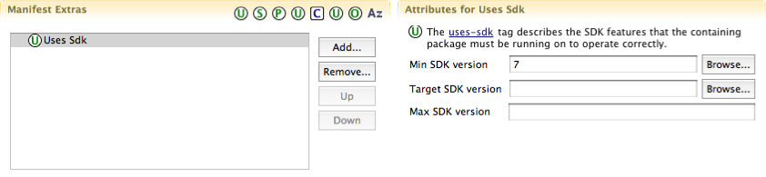
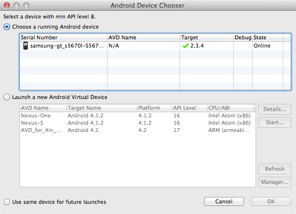

Sofia
- Introduction
- Philosophia Sofia
- Chapter 1
- Getting Started with Android
- Chapter 2
- Structure of an Android Application
- Chapter 3
- Basic GUI-Driven Apps
- Chapter 4
- Testing GUI Apps
- Chapter 5
- Advanced Graphics
- Gallery
- Student Work Gallery
- Appendix A
- Sofia API
- Appendix B
- Demos and Downloads
Jump to...
Chapter 1
Getting Started with Android
In this class you will be using the Eclipse development environment to write your Java and Android applications. Google makes a bundle available for download that includes the Android development kit (libraries, a device emulator, and other tools) as well as the Eclipse IDE packaged together.
Downloading the Android Development Tools
Click the green button below to go to Google's download page for the Android development tools (the link will open in a new tab). On the page that appears, click the blue Download the SDK button.
Once the download completes, extract that ZIP file somewhere appropriate on your hard drive (such as inside your user account folder). The extracted folder should contain two folders inside it named eclipse and sdk. Do not separate these two folders.
Configuring Eclipse
Go into the eclipse folder that you extracted and open Eclipse. After a few seconds, it will ask you where you would like to set up your workspace. Your workspace contains any projects that you create, as well as your Eclipse settings and preferences. You can either use the default recommendation or place it elsewhere on your file system. Check Use this as the default and do not ask again so that Eclipse will not ask you every time you start it, and click OK.
When Eclipse is done loading, you will see the Welcome page. Close it to reveal the full development environment.
Now we need to install some additional plug-ins to make some common tasks in this course easier. Open the Help menu and select Install New Software....
In the Work with: field, paste the following URL and press Enter:
- Work with:
http://web-cat.cs.vt.edu/eclipse4
This is VERY IMPORTANT: Uncheck the following two boxes at the bottom of the wizard: "Group items by category" and "Contact all update sites during install to find required software". If you forget to uncheck the second box, one of the plug-ins that you install will really screw up your Eclipse layout and make it difficult to use.
Click the Select All button to get all of the plug-ins used in this class, and click Next. Review your selection and click Next again.
Check "I accept the terms of the license agreements" and then click Finish.
Wait while the plug-ins are downloaded and installed; this may take a few minutes. You may get a warning about installing unsigned code during the installation. Click OK to continue the installation.
When the installation is complete, Eclipse will notify you that it should be restarted in order for the changes to take effect. Click Yes to do so.
Before you can begin working on class assignments, you need to configure a couple settings in Eclipse's preferences. Once Eclipse has restarted, select "Window > Preferences..." (or on Mac OS X, "ADT > Preferences...") from the menu.
Click "Configured Assignments" from the left panel and copy and paste the following two URLs into the panel. (If the line gets wrapped, make sure you don't accidentally put any spaces in it.)
- Download URL
http://people.cs.vt.edu/allevato/cs2114/assignments.xml- Submit URL
https://web-cat.cs.vt.edu/Web-CAT/WebObjects/Web-CAT.woa/wa/assignments/eclipse?institution=VT
Click OK to save your changes and exit the preferences window.
Eclipse in Brief
If this is your first time using Eclipse, the large number of toolbar buttons and docked views can be intimidating. Fortunately, there are only a few features that you'll really need and you can ignore the rest. The main toolbar has a few buttons that you'll use frequently:
Opens the Android SDK Manager, where you can download other versions of the Android API (for example, to support the precise version on your personal phone)

Opens the Android Android Virtual Device (AVD) Manager, where you can create and configure the virtual devices used by the Android emulator
Opens the Download Assignment wizard, where you can download starter projects for the assignments in the class, as well as small example apps that demonstrate Android and Sofia concepts
Opens the Submit Assignment wizard, where you can submit your work on an assignment to Web-CAT for grading
Creating a Virtual Device
You can develop Android applications even if you don't have access to an actual phone or tablet. The Android SDK provides an emulator that lets you run the Android operating system and your applications on your computer. To do this, you must set up a virtual device that represents the phone or tablet that you want to emulate. Follow the steps below.
Click the
button in the Eclipse toolbar to open the AVD manager.
Make sure that the Android Virtual Devices tab is selected and click the New... button.
Fill in the dialog as described below:
- AVD Name
- Pick a name that you want to use to refer to the device. You can have multiple ones, so this distinguishes among them.
- Device
- This list contains a number of device "templates" that describe the capabilities of the device you're creating. For this class, I would go with either the Nexus One or Nexus S definition, since it's a reasonably up-to-date phone profile that should fit on most laptop screens.
- Target
- Choose the version of the Android operating system that you want to target. The bundle comes with Android 4.2 - API Level 17 by default, so we'll use that one.
- Keyboard
- Make sure that Hardware keyboard present is checked so that you can type in the emulator using your laptop's keyboard, and check Display a skin with hardware controls as well so that you have easy access to the standard Android home/menu/back buttons.
- Emulation Options
- Check the Snapshot button. This sets up your emulator so that if you shut it down, it will resume right where you left it the next time you start it up. Since the emulator can take a fair amount of time to start, you definitely want this.
You can leave the other options set to their defaults. To create the device, click OK.
To save time later on, go ahead and select the device you just created in the list and click the Start... button. Make sure that Launch from snapshot and Save to snapshot are both checked, then click the Launch button.
The emulator window will appear on the screen and you will see the device boot up. Be patient – a full boot may take several moments, especially on slower computers. Once the Android home screen appears, you may want to familiarize yourself with the available features and applications. Once you're done, close the emulator. The next time you start it, it will unfreeze the snapshot and you won't have such a long wait. (Closing the emulator may also take a moment; do not worry if it appears to hang.)
Was the emulator window too big to fit the entire phone screen on your computer monitor? If so, you can adjust the scaling factor by closing the emulator and then starting it again, but this time check the "Scale display to real size" button and then play around with the "Screen Size (in)" value to get a scaling factor that would make it fit. Don't make it so small that you can't interact with it, though!
Finishing Up
Before you dive in and start coding, you'll probably want to bring up a couple useful views in Eclipse that you'll use frequently.
Go to the Window > Show View > Other... menu and choose Android / LogCat and click OK. The LogCat view lists diagnostic messages that are logged by the Android emulator or device. Most of the messages will be things that you can ignore, but if your program crashes or throws an unhanded exception, the exception message and stack trace will appear in the LogCat view (in red, with the AndroidRuntime tag).
Then, go to the Window > Show View > Other... menu again and choose General / Properties and click OK. This view lists properties of whatever item is currently selected in another Eclipse view or editor; you may find it useful later on when you're designing GUIs for your assignments to edit the properties of the widgets you drop on the canvas.
Using Your Own Phone or Tablet
If you have your own Android phone (or other device) that you want to use for development, you'll be much better off using it in class instead of wrestling with the slow emulator. The steps below will help you get it configured properly.
Enabling USB Debugging on Your Phone
In order for Eclipse and the Android SDK to use your phone as a testing device, you need to enable USB Debugging on the phone. Here's how.
If your phone is connected to your computer via the USB cable, disconnect it first.
Go to your phone's "Settings" application. Depending on your particular phone, you might find this on the same screen as your other apps, or you might be able to access it by pressing the Menu button while on the home screen.
Tap on "Applications".
If it is not already checked, tap the option labeled "Unknown Sources (Allow install of non-Market applications)".
Tap on "Development".
If it is not already checked, tap the option labeled "USB Debugging (Debug mode when USB is connected)".
Determining Which Version of Android Your Phone Is Running
If you don't know what version of Android your phone is running, you may need to look this up in order to modify the programs you write to support an older version.
AndroidManifest.xml in your projects to get them to run properly.
Go to your phone's "Settings" application.
Scroll down to "About phone" and tap it.
Scroll down to "Firmware version" and look at the number there. This number is the "Platform version", which corresponds to a particular API version in the SDK. For example, Android 2.1 corresponds to API level 7.
A full listing of the current platform versions and the matching API level can be found here: Android API Levels.
Changing the Minimum API Level of a Project (optional)
As mentioned above, the Eclipse projects that you start out with are configured for a minimum API level of 8, or Android 2.2. If your phone is running something older than this, then you will need to modify this API level so that the app will run on your phone.
Note: You can still run an app compiled with a higher version of the SDK (for example, 2.3.3 API level 10) on a phone with an older version of the OS (say, 2.1 API level 7), by setting the minimum SDK version appropriately. You must make sure, however, that you don't require any features that were introduced after that minimum version.
Double-click the
AndroidManifest.xmlfile in the project that you want to modify.On the Manifest tab under Manifest Extras, click the "Uses Sdk" option.
Under the "Attributes for Uses Sdk" heading, change "Min SDK Version" to a lower API version that corresponds with your phone.

Save your changes.
Running an App on Your Phone
If you've correctly followed all the steps above, you should be ready to run an app that you've written on your phone.
Connect your phone to your computer using the USB cable.
Some users (Windows and Linux) may need to install a USB driver or otherwise do some configuration for their phone to be properly recognized. If you have problems with the instructions below, you may find the information at this link helpful.
Run your application (or your tests) as you normally would by selecting "Run As > Android Application" or "Run As > Android JUnit Test" in Eclipse.
If your phone is detected correctly, then the Android Device Chooser window should appear. The device chooser lets you decide whether you want to run the app on any phones that are connected to your computer, or on one of the virtual devices in the emulator.

Make sure that "Choose a running Android device" is checked, then select the phone that you want to run the app on.
Notice that if your phone is running a lower version of Android than the SDK target that you are compiling with, you may see a red X in the "Target" column for that phone, as you can see in the screenshot. That's OK – the app will still run, as long as you didn't use any features that require a newer version of the OS.
Click "OK". You will see some informational messages on the console, and after a moment the app should start on your phone. If your phone is asleep, you may need to wake it up/unlock it to see it.